Россиянинг талаби, 12 йиллик таълим ва карта танлашдаги эркинлик — ҳафта дайжести
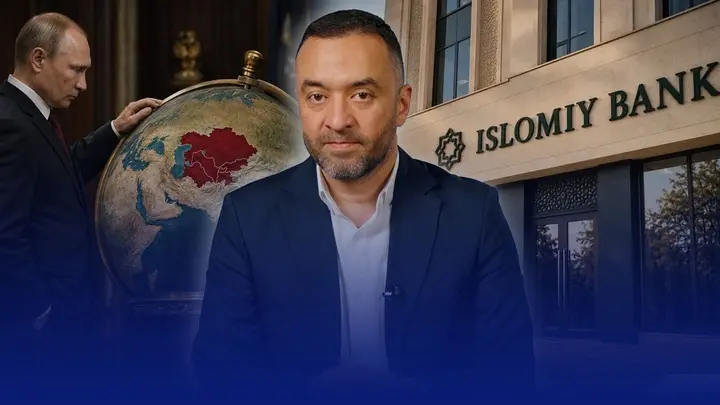

Тошкентда илк бор ўтказиладиган Tashkent Content Market 2027 халқаро контент бозорида иштирок этиш учун рўйхатдан ўтганлар сони 1000 нафардан ошди. Тадбирда 15 дан ортиқ давлат вакиллари, шунингдек, Netflix, Amazon, Apple ва BBC Studios каби йирик компаниялар иштирок этиши кутилмоқда.
Imarat амбассадори Шаҳзода Муҳаммедова муаммоларда турмуш ўртоғининг ҳамкори Жасур Азизовни айблаб чиқди. Ҳамдамов ҳам ўз баёнотида Азизов унга таҳдид қилиб, “офисга киритмаётгани”, компания номини ҳам унинг розилигисиз ўзгартиришганини иддао қилган. Интернетда тарқалган аудиода эса Ҳамдамов “вазият издан чиқиб кетгани” сабаб “офисга боришга уялаётгани”ни айтиб, брендни ўзгартиришни таклиф қилади.
2026 йил 2 июн. Соат тахминан 18:30. Сурхондарё вилояти ҳокими Улуғбек Қосимовнинг қўл телефони жиринглади. Ҳоким қўнғироққа жавоб берди. “Мен администрациядан фалончиман, афғонистонлик тадбиркор Термиз шаҳридаги “Дипломат” ресторани ҳудудига кўп қаватли уй қурмоқчи, шунга рухсат олишда амалий ёрдам керак”, деди қўнғироқ қилаётган одам. Бу шахс Экоқўмитада Департамент бошлиғи бўлиб чиқди.
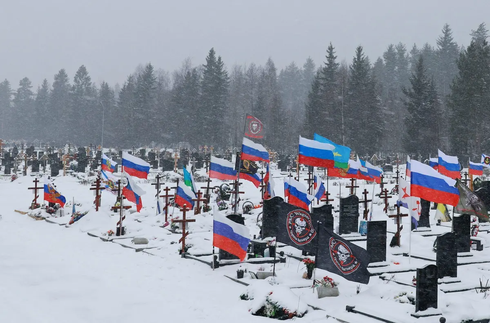
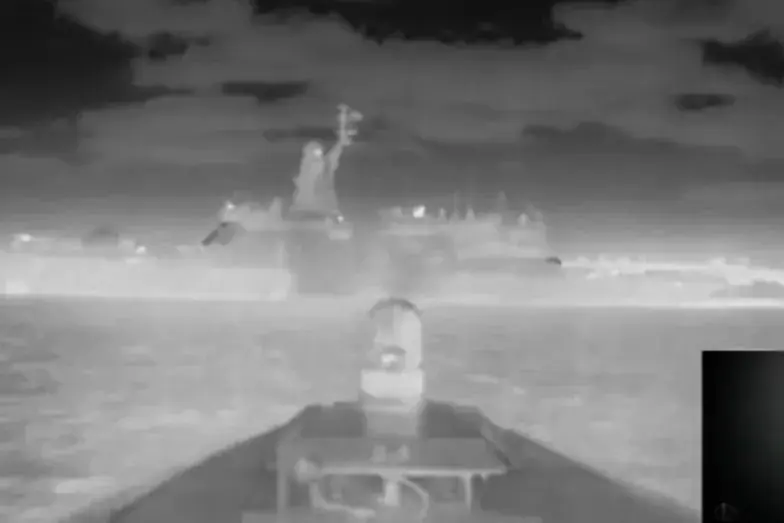
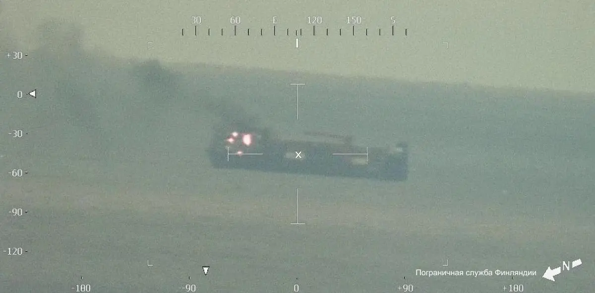
12:30
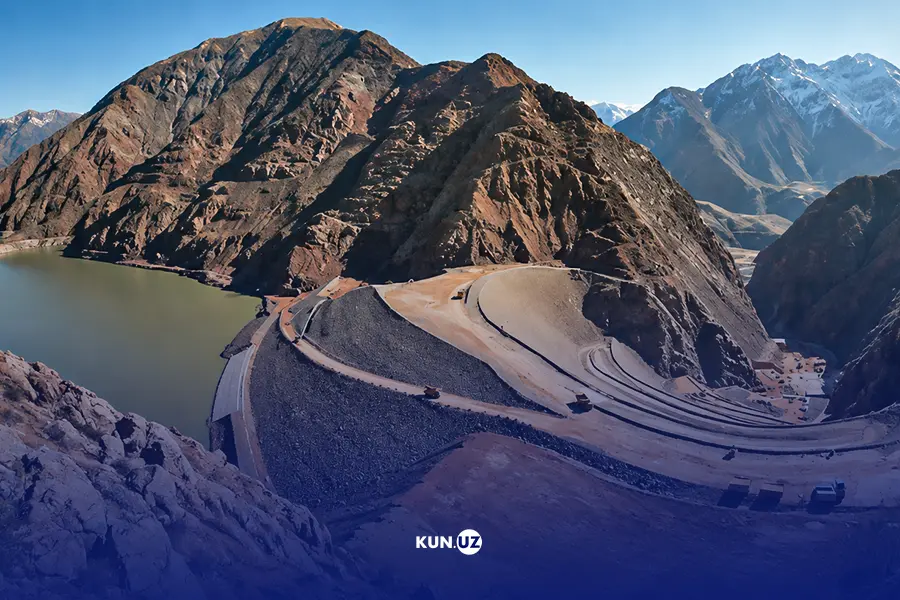
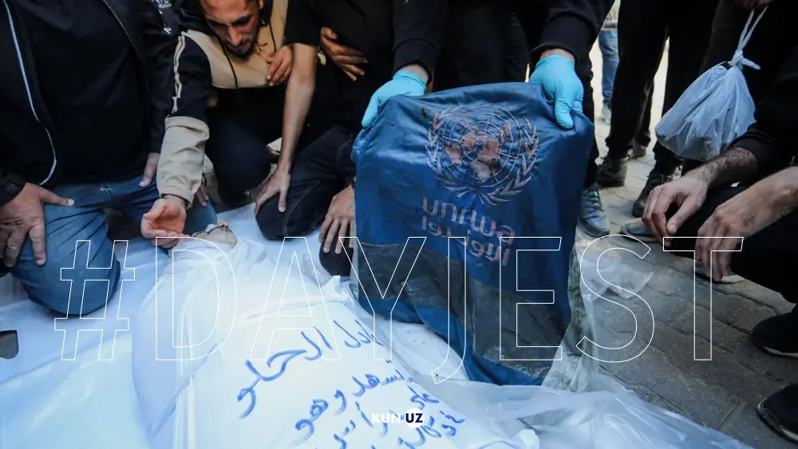
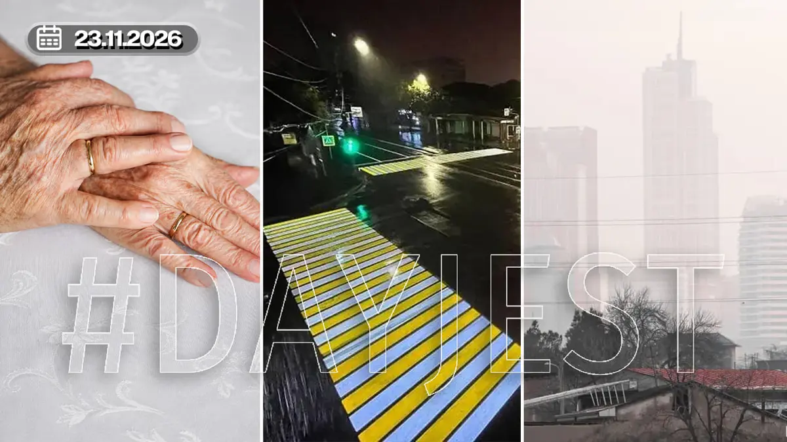
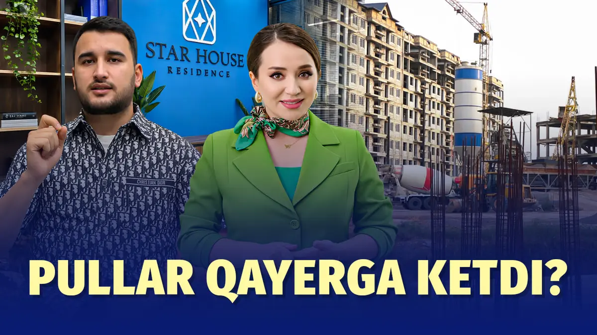
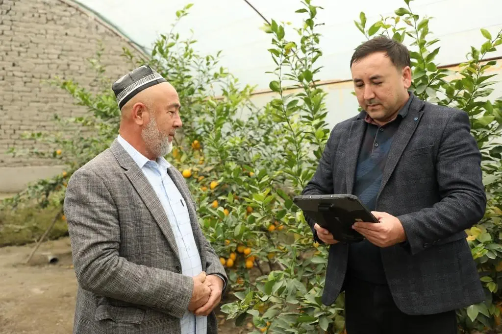
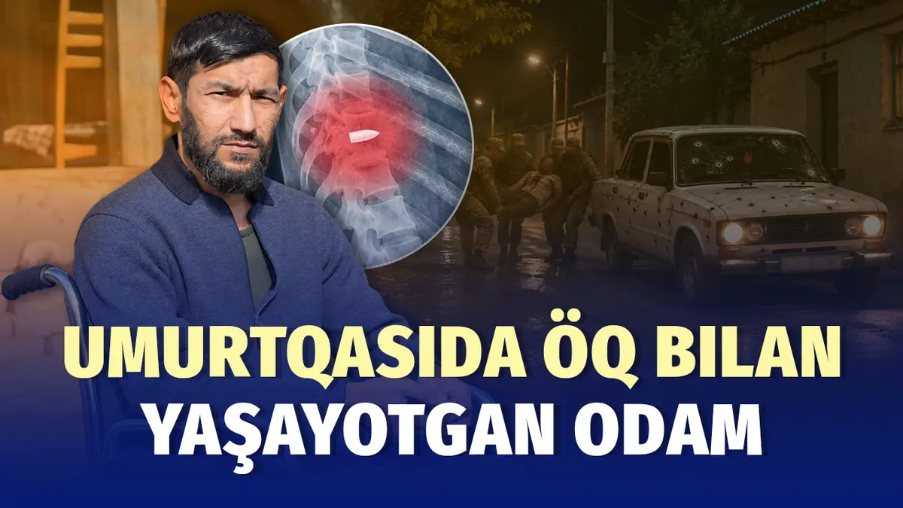
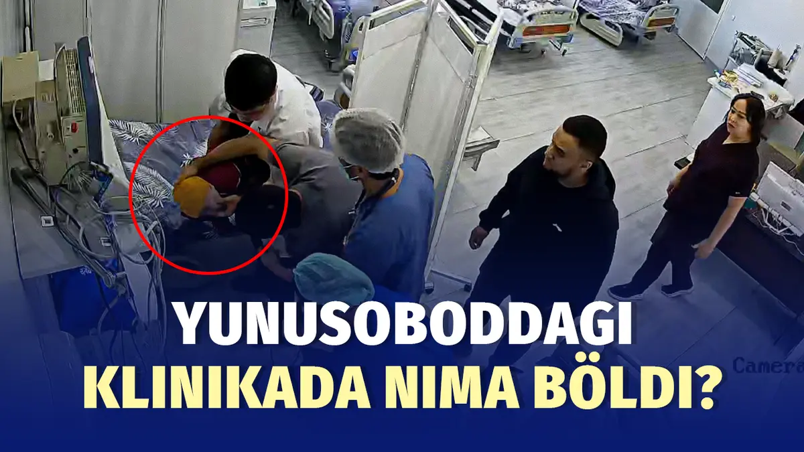
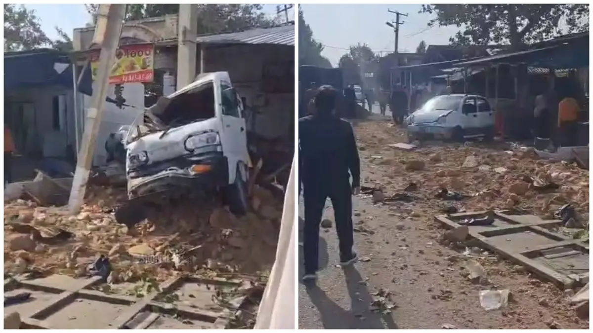
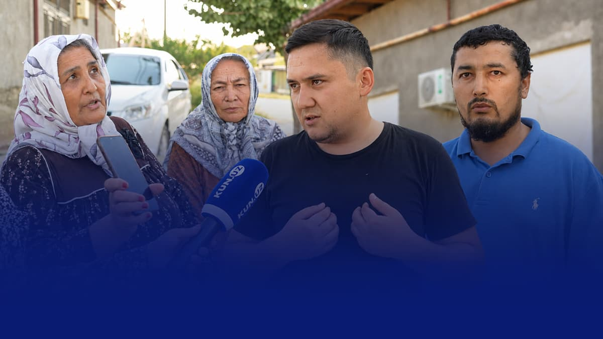
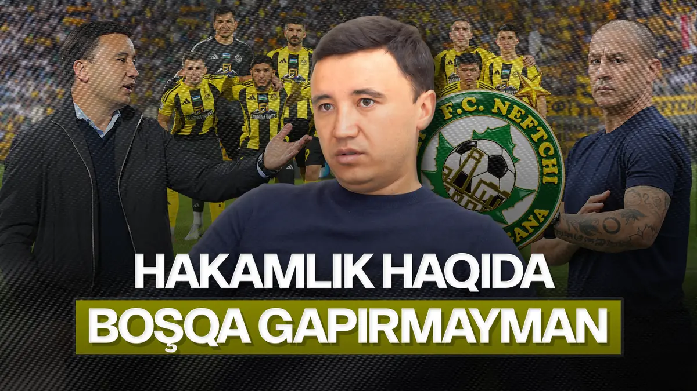
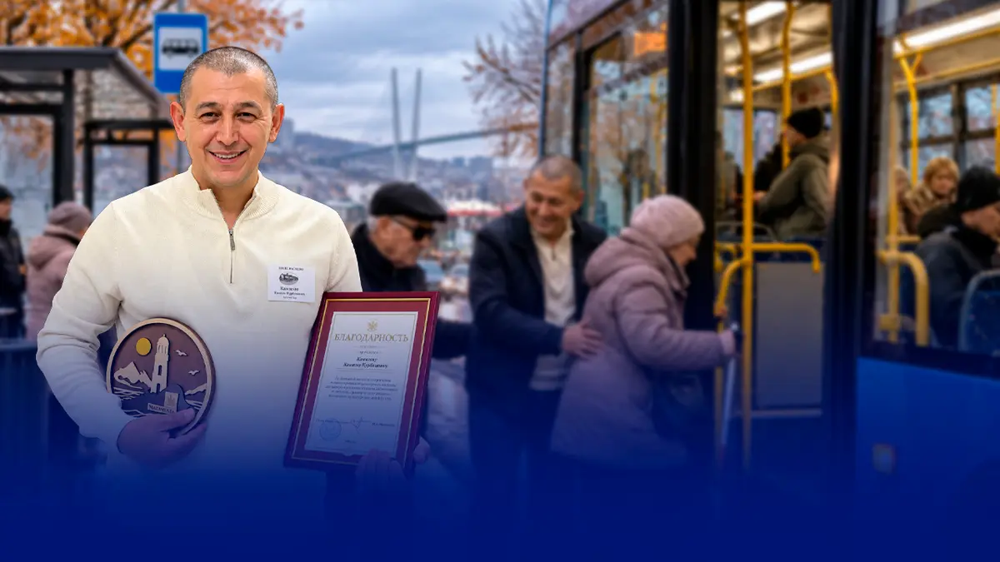
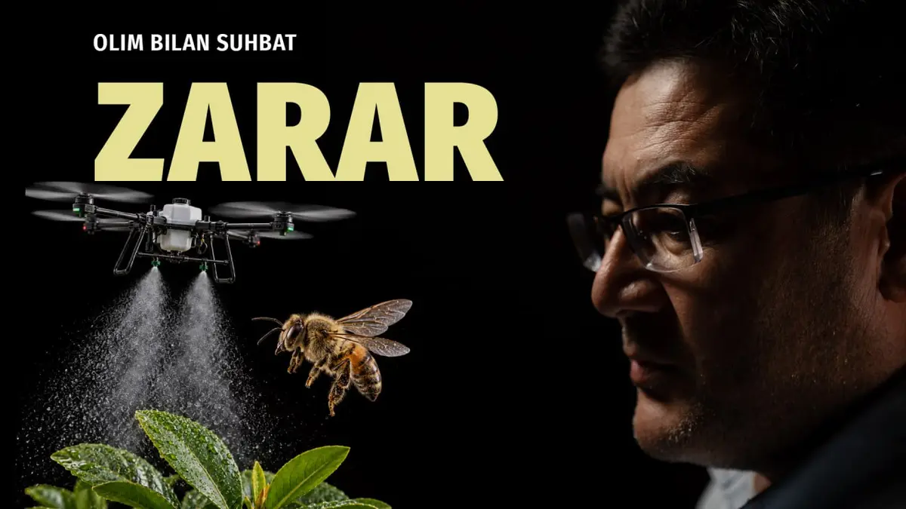
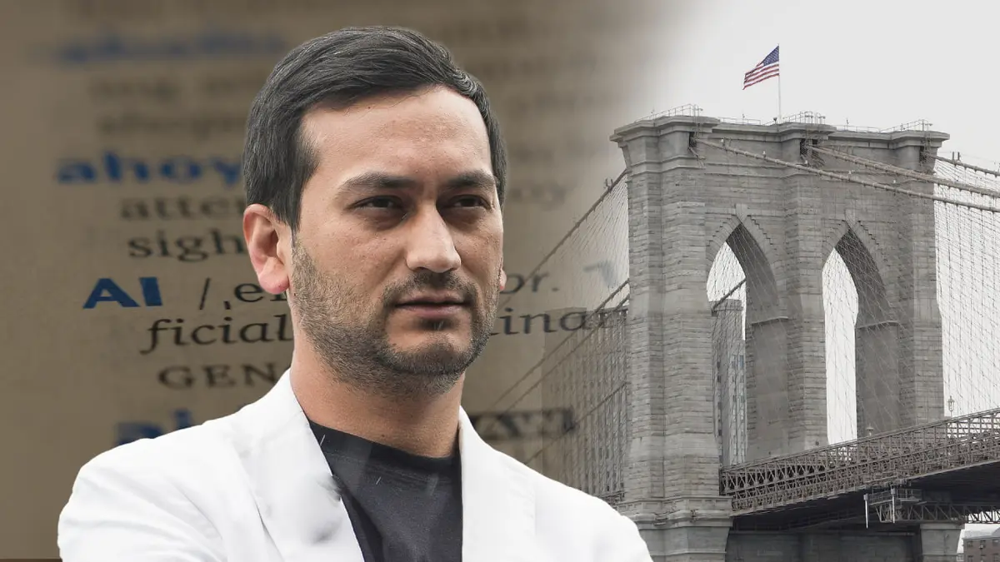